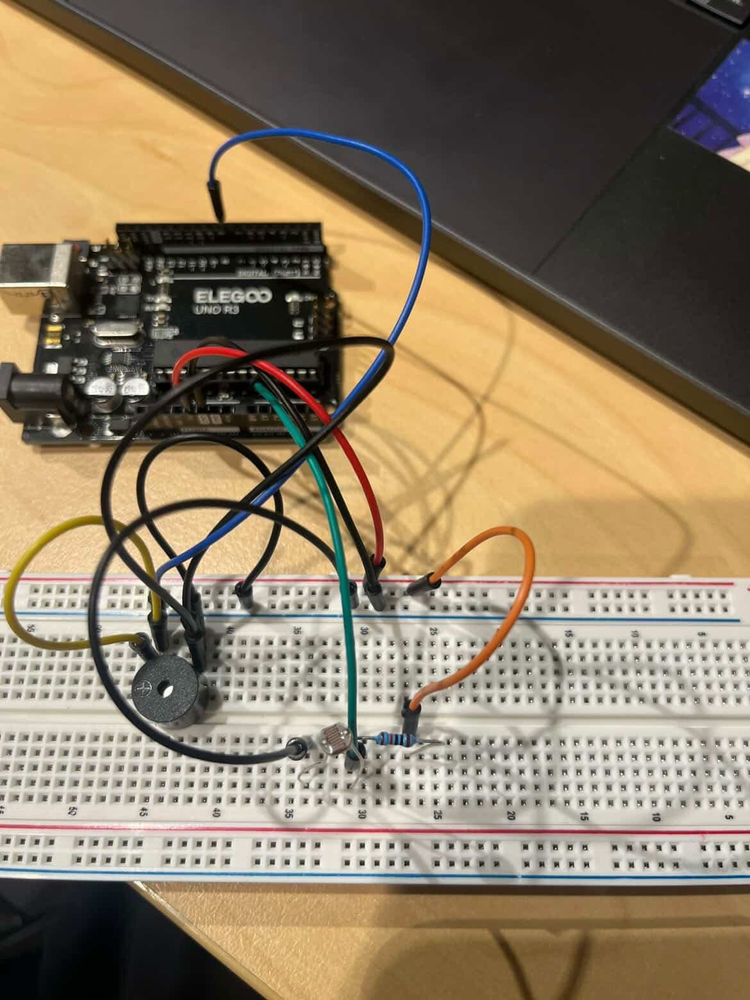
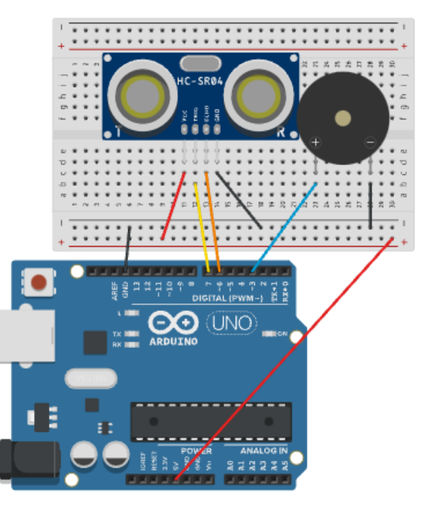
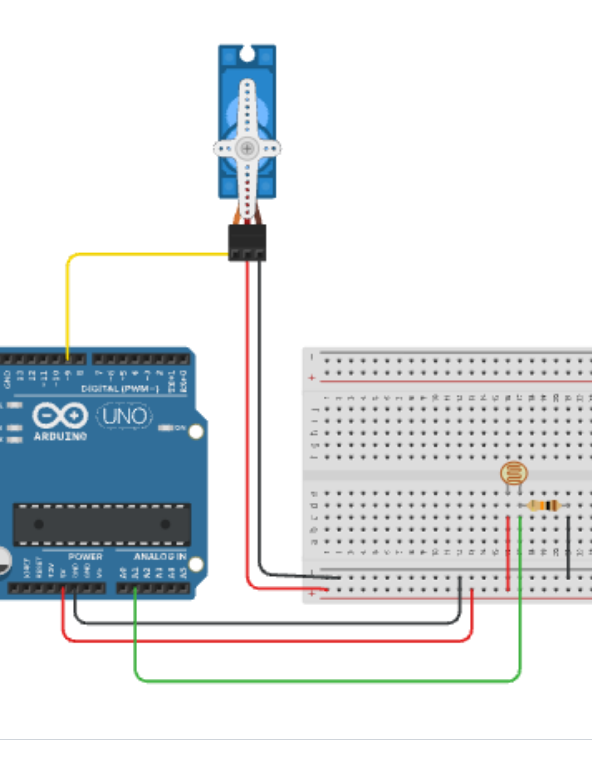
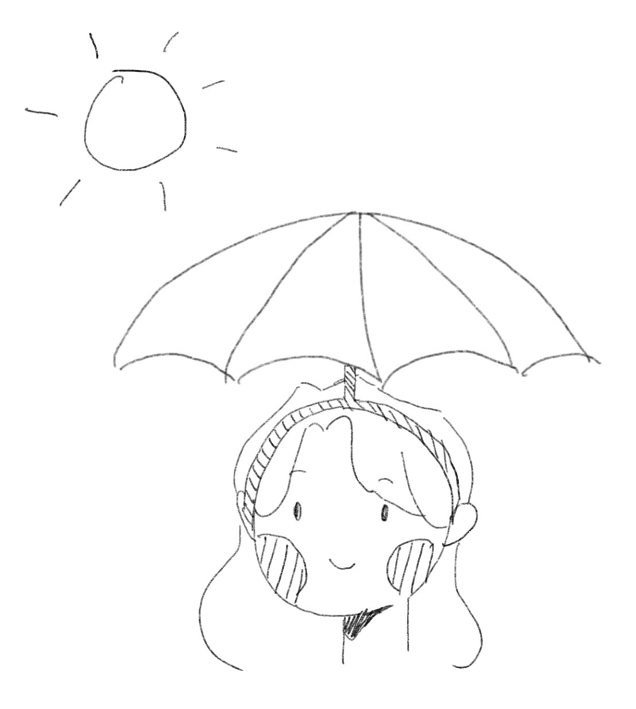
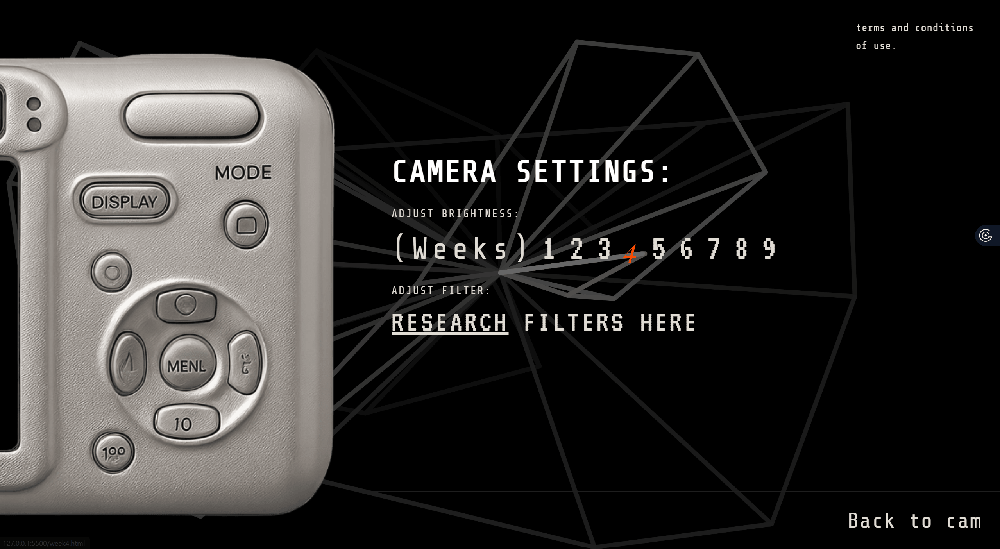
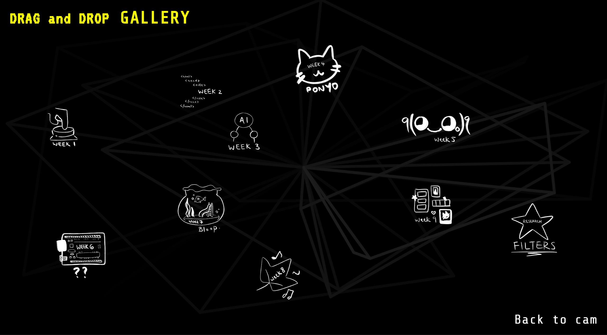
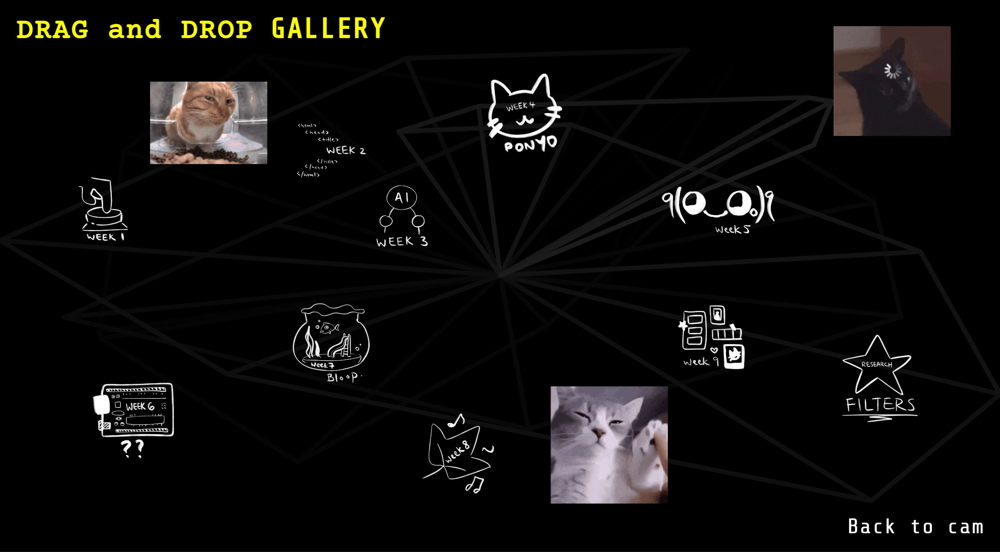
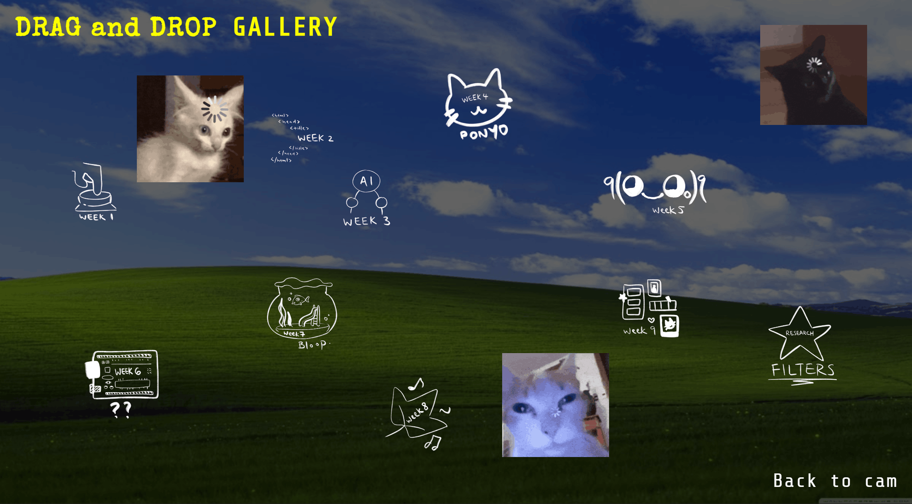
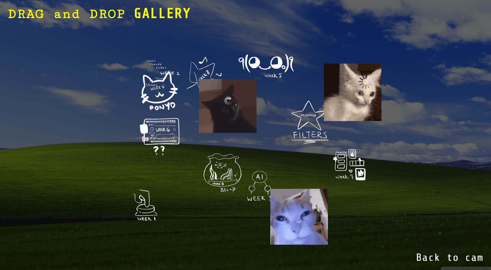

In week 7's tutorial, we experimented a bit more with making sounds through our sensors. This was similar to the circuit we made last week with the LED light.

The next circuit we made was especially interesting because we were able to see it being used in action (in a super low-fidelity setting but still very interesting!).

Lastly, in the last 10 minutes we were also able to make the fish playground circuit work as well. it does look a little like a fish flapping its fins ahahha.

The idea behind my Chindogu invention is a umbrella hat that users can wear to prevent sunburn. In Asia, its very common for people to bring umbrellas out on a sunny day as a method for effective sun block. Fr this invention, I hence had an idea for a hat that detects UV rays and opens an umbrella automatically once a certain level of UV has been exceeded.




